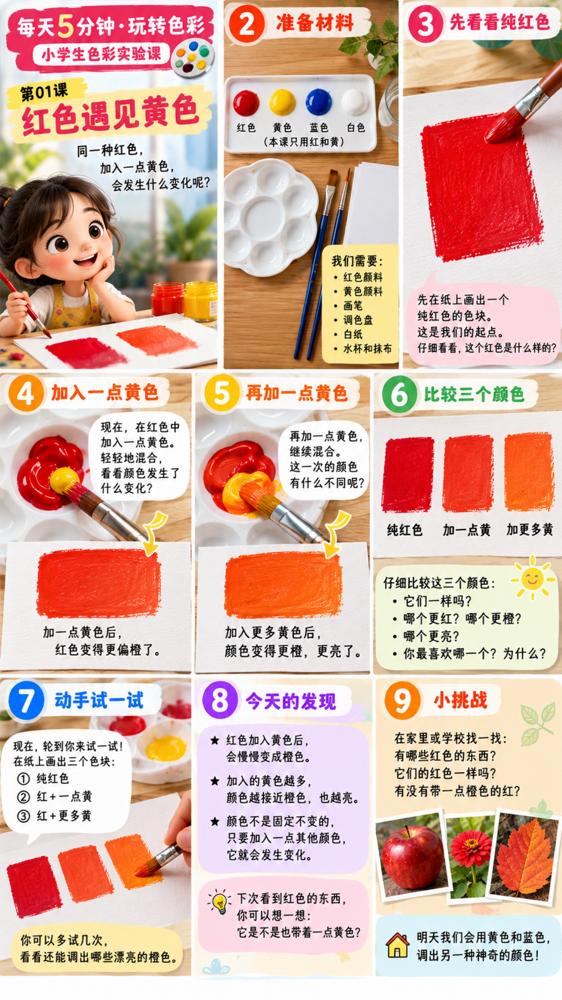

同一种红色，加入一点黄色，会发生什么变化呢？

本课只用红和黄。蓝色、白色先放着。
先在纸上画出一个纯红色的色块。这是起点。仔细看，这个红色是什么样的？
在红色中加入一点黄色，轻轻混合。加一点黄色后，红色变得更偏橙。
再加一点黄色，继续混合。这一次更橙，也更亮。
把三块排在一起：纯红色、加一点黄、加更多黄。
在纸上画出三个色块：① 纯红色 ② 红 + 一点黄 ③ 红 + 更多黄。可以多试几次。
在家里或学校找一找：有哪些红色的东西？它们的红色一样吗？有没有带一点橙色的红？
下次看到红色的东西，可以想一想：它是不是也带着一点黄色？明天用黄色和蓝色，调出另一种颜色。
每天5分钟 · 玩转色彩
色彩观察学院 · 儿童色彩实验室 · 晨霞子